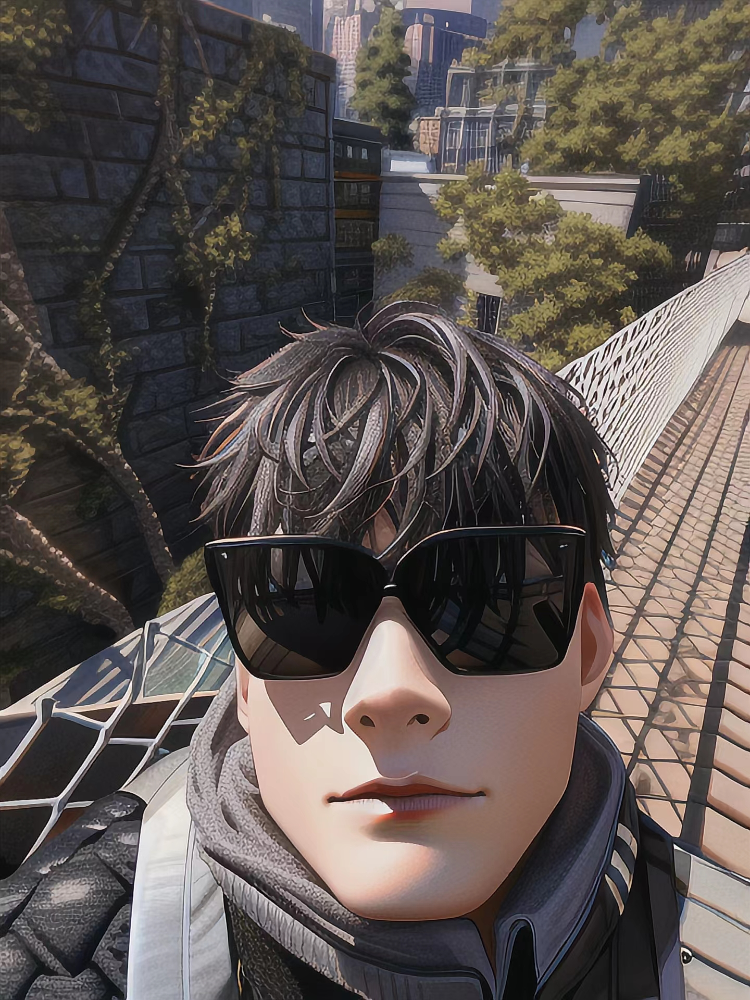

About Me
2001-2-2
⛄️All at sea：希望能成为一个有趣的人。希望能创造出可以成为他人回忆的事物。
今天你摸鱼了吗？22 岁，已毕业。热爱旅游、徒步。成长 ing。
在下年满十八，遵纪守法，爱国爱家，不碰烟酒，善养鸡鸭，多素少荤，爱吃西瓜。
见字如面，很高兴能够在此与你相遇。
我喜欢夏日冰凉的西瓜、在悠闲的午后睡觉，以及像哆啦 A梦一样可以承载想象的动漫与科幻故事，还有可爱又有趣的女孩子，啊不对，是一切有趣的事物。我也想希望自己可以成为一个有趣的人，并创造出可以成为他人回忆的事物。
但凡人能想象到的事物，必定有人能将它实现。
——儒勒·凡尔纳
简而言之就是可以不用上班，自己在家做觉得有趣的事情的人！（想必大家也是）
列表
- 爱好：科幻电影、简单绘画、旅游、以及一切有趣的东西、
摸鱼 - 喜欢：西瓜、睡觉、纸片人（可爱的女孩子）、史迪仔
- 讨厌：肥肉（啊，我是指吃的那种）,夹子
- 运动：游泳、徒步、爬山
- 目标：有车有房有钱人

以及种花种草，养狗养猫，孤独终老。
此生想要完成的事情
想想还是可以的
- 带喜欢的女孩子各地旅游
- 在乡村老家有一栋按照自己想法建造的房子
- 成为一个自己不讨厌的、有趣的人
- 买一辆车
- 全部各地旅游（进行中）
我对普通的人类没有兴趣。你们之中如果有外星人、未来人、异世界来客或者超能力者以及喜爱一切有趣事物之人的话就来找我，完毕。
——「凉宫春日」